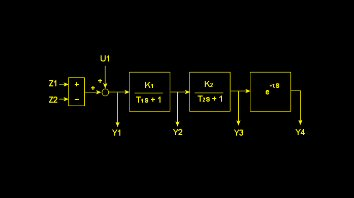

Schemat F. 
|
||||||||||||||||
|
Obiekt ten jest obiektem ci±g³ym o zadanej transmitancji. Jest to po³±czenie bloku zadajnika warto¶ci, dwóch bloków jednoinercyjnych i bloku realizuj±cego opó¼nienie. Ramka danych wyj¶ciowych (stan obiektu). zmienne analogowe (tablica IWE):
Ramka danych wej¶ciowych (steruj±cych). zmienne bitowe (tablica BWY):
zmienne analogowe (tablica IWY):
|
||||||||||||||||